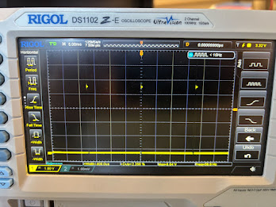
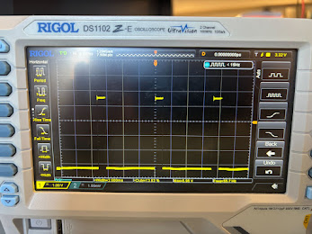

6-DOF Robotic Arm
A six-axis robotic arm built by a team of two. My teammate designs the mechanics; I brought up the drive system, six brushless motors flashed, calibrated, tuned and commanded over one CAN bus from an STM32.
View Project06Electronics, MSE 2201 course project2025
A hobby servo driven from a 9 V supply alone. An LM317 regulator sets a safe supply voltage, and a 555 timer turns a potentiometer into a variable-width control pulse.
A hobby servo sets its angle from the width of a repeating control pulse. The task was to drive one from a single 9 V supply, with no microcontroller and no function generator. The circuit had to make its own safe supply voltage and its own adjustable pulse.
The driver has three stages: a regulator, a pulse generator and the servo connection.
An LM317T adjustable regulator brings the 9 V input down for the timer and the servo. Two resistors, 1 kΩ and 3.3 kΩ, set its output to 1.25 × (1 + 3.3 / 1.0) = 5.38 V.
An NE555 timer runs as an astable oscillator from that supply. A 10 kΩ potentiometer sits between a 2.2 kΩ and a 100 kΩ resistor, with its wiper on the discharge pin. A 1N4148 diode separates the timing capacitor's charge and discharge paths: the 220 nF capacitor charges through the 2.2 kΩ resistor and one side of the potentiometer, and discharges through the other side and the 100 kΩ resistor. Turning the potentiometer moves resistance from one path to the other, so the pulse width changes while the frequency stays nearly constant.
The regulated supply powers the servo, and the 555 output drives its control input.
Each stage was built and tested on its own before the three were joined. A bench supply powered the 555 stage for its first test, to keep regulator problems out of it, and the servo was checked with a function generator before it was connected to the circuit.
The regulator measured 5.526 ± 0.002 V on a Rigol DM3058 multimeter, against 5.38 V designed. With 5% resistors, root-sum-square propagation of the two tolerances gives 5.38 ± 0.29 V, a range that contains the measured value.
On the oscilloscope, the pulse ran from 0.40 ms at 56.6 Hz to 2.50 ms at 55.7 Hz: duty cycles of 2.3 ± 0.32% and 13.9 ± 0.31%. The duty-cycle uncertainty comes from the scope's 0.05 ms time resolution, propagated through the duty cycle, high time over period.
Under potentiometer control the servo swept from about 30° to about 150°, smooth and stable through the middle of its travel, with mild jitter near the upper end stop.


The jitter near the upper end stop was the one issue recorded, consistent with the servo reaching its mechanical limit. The regulator output sits above 5.0 V, and the pulse repeats at 55.7 to 56.6 Hz rather than 50 Hz.
The next steps are resistor values that bring the regulator closer to 5.0 V, a narrower potentiometer range so the servo is not driven past its stops, and RC values that give exactly 50 Hz.
A six-axis robotic arm built by a team of two. My teammate designs the mechanics; I brought up the drive system, six brushless motors flashed, calibrated, tuned and commanded over one CAN bus from an STM32.
View Project